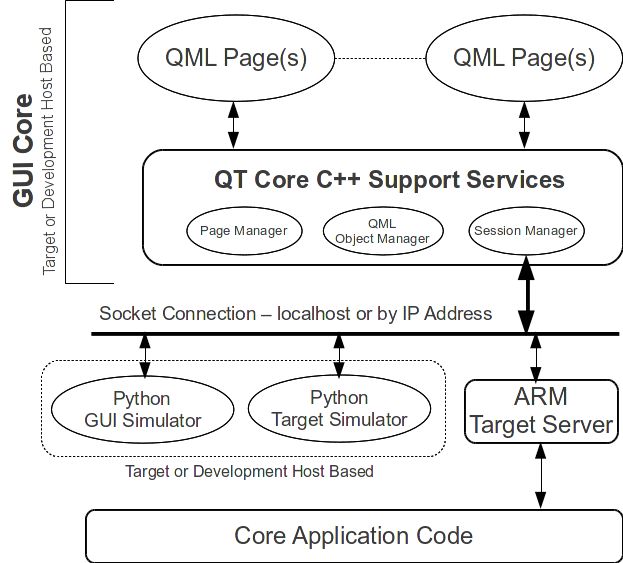

Embedded Approaches with QT/QML
Developers of GUI based systems, using QT, are faced with
consistent challenges:
- The ability to develop a GUI independent of the underlying
application code.
- The ability to develop underlying application code without a
functional GUI.
- The ability to do both simultaneously while actual production
hardware is being developed, which often leads to working on
evaluation hardware that may not be full-featured.
This paper focuses on some approaches to help the developers
approach the implementation strategy in a way that allows clean
development, debug and deployment of complex products. The concepts
outlined in this paper provide the following:
- Simplistic ways to develop the GUI in a target hardware
agnostic fashion.
- Simplistic ways to simulate the target runtime code through
Python scripting; Python scripting serves as a simulator for the
GUI, allowing easy interaction and updates, as well as GUI
regression testing.
- Simplistic ways to drive the target runtime code
through Python scripting; Python scripting serves as a means to do
operational testing, as well as controlled regression testing.
Python as a Development Tool
Although most people will not deploy a product that is completely
Python based, Python serves as a excellent choice for easing the
development cycle for the following reasons:
- It's extremely fast to develop in.
- Developers with either none or limited Python experience are
easily able to grasp the approaches and use the language; it is a
very friendly language to work with.
- It is host independent; Python can run on x86/Windows
environments, x86/Linux environments or target ARM/Linux
environments without any changes.
In summary, it's ease of use, and the abundance of online
documentation make it an excellent choice as a development tool, as
scripting is rapidly prototyped, tested and deployed, and it's core
is string based operations, making it easy to interact with.
QT and QML
Although QT has been around for many years, and there are many
product GUI's developed around it, QML is a relatively new player in
recent years. The advantages of a mixed-mode GUI development
environment are the following:
- QT is C++ based, and although runs reasonably well on both
Windows and Linux targets, there are some minor quirks on OS layer
interfaces, such as how to spawn child processes. Conditional
compilation takes care of this, allowing a GUI to run under both
Windows and Linux.
- QML is completely target agnostic; it's a scripting language,
and it runs inter-operable in both Windows and Linux based
environments without change.
If QML is adopted as the primary language for development of the
GUI, then the underlying QT, C++ based logic, simply serves as a
foundation for the QML. Core services in QT/C++ can be developed
that operate under Windows or Linux, and then stable, rarely requires
change, while the bulk of the GUI development efforts lay in QML.
A Practical Implementation Strategy
Figure 1 serves as a foundation for discussion of a practical
implementation strategy.

Figure 1 ‒ A Practical Implementation Architecture
GUI Core
The GUI Core is designed to operate under both Windows and Linux.
It's foundational design is rooted around socket level communications
with some connected server. Thus, it is a “client” in a
Client/Server model, and operates stateless. There are really two
modes of development under QT:
- Signals and Slots, in a C++ environment.
- QML, and QML Objects by name.
In either case, the point is to abstract these away from binding
with underlying core application services. However, the preferred
approach is QML, with Objects by name, versus the traditional Single
and Slots model.
In the architecture showing in Figure 1, we have two main
components, with three key sub-components:
- QML Pages. These provide the actual GUI presentation, as
well as a series of objects to interact with.
- The QT/C++ component foundation, which contains three
sub-components:
- Page Manager: Mainly focused on startup, and launching
the parent QML Page.
- QML Object Manager: Mainly focused on dealing with
Objects, by name, in the QML sub-system.
- Session Manager: This provides interaction outside of
the GUI with the underlying application, as well as application
simulator. In this discussion, we focus on this being a component
that interacts with outside components via Socket level
communications, with String/Object Name based interactions.
QML Object Manager
A C++ set of methods responsible for
providing a “bridge” between QML and the connected Server that
provides functional, state-full services. Listing 1 shows a simple
button that requests a “load” of some data:
ExmplButton1 {
buttonText: "Load"
id: exmpl_button_Load
x: 550
y: 530
MouseArea {
anchors.fill: parent
hoverEnabled: true
acceptedButtons: Qt.LeftButton | Qt.RightButton
onClicked: {
info.text = 'Clicked (wasHeld=' + mouse.wasHeld + ')'
var exmplString = "get exmplButton"
exmpl.updateField( exmplString )
}
}
Listing 1 ‒ Simple Button to Query
This example has two characteristics:
- The
Object Name is exmpl_button_load,
by ID.
- The
query to the underlying C++ method in QT is done through
exmpl.updateField() once
the button is clicked on. This passes down the string “get
exmplButton”. This string is serviced by the Object
Manager, which, in the end, passes the entire string, intact, to
some handler via a Socket level connection by the Session Manager.
- The
handler then services this request, and returns a response via the
Session Manager, which then does a reverse lookup by name to find
the original Object, and then properly handles. Listing 2 shows a
simple interaction to find the original Object.
>
ExmplButton1 {
QObject *qmlTextBox = dataPagesObject->findChild(objectId);
if( qmlTextBox ) {
qDebug() << "ExmplGui::sessionProcessReadData(): Object Found";
qDebug() << "Setting Text";
qmlTextBox->setProperty( "text", QVariant( objectVal ) );
}
}
Listing 2 ‒ Back Binding to QML by ID
Although
specific details are omitted from these listings, there are two key
points:
- Strings
passed down from QML contain an Object ID encoded in them. In this
case, it is “exmplButton”.
- Strings
returned by underlying services contain that Object ID encoded in
them, thus allowing a reverse lookup from the QT C++ services to
find the original Object ID, and make changes to the attribute based
on specific request. In this case, the underlying, remote connected
server understood from the passed string to have QT C++ services
lookup by name “exmpl_button_load”.
Specifically, the QT C++ looked up the QML Object, by ID, through
findChild(objectId).
Example String/Object ID Bindings
On
some sort of query from QML to the underlying application code, and
takes the form of:
get
objectId=[optional parameters]
On some sort of “set”, which causes action to happen from the
underlying application code, the string takes the form of:
set
objectId=[parameters, comma separated, which are parsed by underlying
application code]
Return strings adhere to the rules, providing easy back binding to original
request. The result of this is:
- An
API that is string based, thus allowing the underlying application
code to be interacted with via Telnet and socket based
communications. It imposes constraints, based on Object ID's, which
lead to consistency in approach and development.
- Through
the defined API, which is string based, and interactions done over a
socket, two things happen:
- A
stateless GUI can be developed; it sends strings, responds to
strings
- A
state-full application is developed, which acts on string input
(commands), and emits string based results.
The GUI operates independent of the application code, the application
code operates independent of the GUI.
Python, Our Development Friend
The foundation of this approach is how to employ Python to help
with development efforts. Python is a friendly language, that is
string based, and allows easy Client/Server interactions. This paper
has focused on string based operations. This is key to utilization
of Python to help us develop:
- A Python Server can easily be developed which responses
to string based inquiries from the GUI, via a socket. Thus, with a
defined API, the GUI can be developed independent of the
application, using the defined string based API. The GUI can be
developed under Windows or Linux; it doesn't matter. It's core
functionality is to serve pages, and simply send requests, and
respond to those requests.
- Python scripting serves as a test bed prior to full
implementation of target logic, allowing developers of the GUI to
send requests, get expected responses.
- A series of Python scripts can be developed to “drive”
the application, either for development, or for regression testing.
Envision several Python based tools:
- A command line interface to sequence the underlying core
logic of the application.
- A series of scripts to perform regression testing, from an
automated build perspective; nightly pulled trees are built,
installed on the target, and then scripting run to test for valid
functionality. Continuous integration.
- From a day to day development perspective? Scripting easily
developed to test various modes of operation of the product.
An easily used language for rapid-prototype work, and gives
simplistic approaches to developing both the GUI and application code
independent of each other.
Summary
All products contain unique challenges on how they are developed
and deployed. This paper offers an approach that allows simultaneous
development of a GUI and Application Code while working with the
realities of daily life; multiple groups involved, hardware in flux,
and integration always being the challenge for final deployment.
It's
core concept is design to debug, and design to have clean interfaces
without the complicated bindings that prevent unit testing and clean
deployment. Often it is easier to develop a GUI under and Windows
based host, without target hardware, while the application code is
developed on the target hardware.